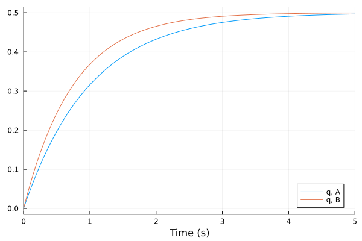
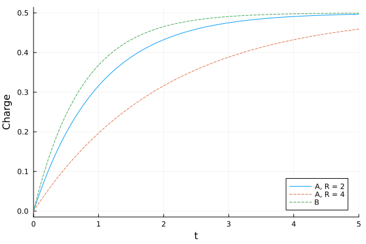

Reusable Subsystems
The source files for all examples can be found in /examples.
A subsystem written once and used several times is a Julia function that returns a model with a power port. This page builds a series RC load, uses it twice, reads results from each copy, and changes one copy's parameter without recompiling.
using BondGraphToolkit
using BondGraphToolkit.ModelingToolkit: t_nounits as t
using OrdinaryDiffEqTsit5
using PlotsA one-junction subsystem
A junction is already a subsystem: it owns its elements, and a free port is its connection to the outside. The series RC load is a 1-junction whose free port power is a bond entering it (:power => :in), so the load is connected like an element, through load.power:
RCLoad(; name, R = 1.0, C = 1.0) =
Junction1(:power => :in, Resistance(; R, name = :r), Compliance(; C, name = :c); name)RCLoad (generic function with 1 method)Two copies, each driven by its own source. Every copy gets its own namespace, A.r, B.r, so their elements, states and parameters stay apart:
@named A = RCLoad(R = 2.0, C = 0.5)
@named B = RCLoad(R = 3.0, C = 0.25)
@named VA = Se(1.0)
@named VB = Se(2.0)
@named loads = System([connect(VA.pout, A.power), connect(VB.pout, B.power)], t;
systems = [VA, VB, A, B])
bgplot(loads)
-->
<!-- Title: BondGraph Pages: 1 -->
<svg width="261pt" height="281pt"
viewBox="0.00 0.00 261.00 281.00" xmlns="http://www.w3.org/2000/svg" xmlns:xlink="http://www.w3.org/1999/xlink">
<g id="graph0" class="graph" transform="scale(1 1) rotate(0) translate(4 277)">
<title>BondGraph</title>
<polygon fill="white" stroke="none" points="-4,4 -4,-277 256.75,-277 256.75,4 -4,4"/>
<!-- VA -->
<g id="node1" class="node">
<title>VA</title>
<text xml:space="preserve" text-anchor="middle" x="126.38" y="-92.33" font-family="Times,serif" font-size="14.00">Se:VA</text>
</g>
<!-- A -->
<g id="node3" class="node">
<title>A</title>
<text xml:space="preserve" text-anchor="middle" x="126.38" y="-13.32" font-family="Times,serif" font-size="14.00">1</text>
</g>
<!-- VA&%2345;>A -->
<g id="edge5" class="edge">
<title>VA&%2345;>A</title>
<path fill="none" stroke="black" d="M126.38,-79.34C126.38,-68.25 126.38,-57.17 126.38,-46.08"/>
<polygon fill="black" stroke="black" points="126.38,-36.1 130.88,-46.1 126.38,-40.9 126.38,-46.1 126.38,-46.1 126.38,-36.1"/>
</g>
<!-- VB -->
<g id="node2" class="node">
<title>VB</title>
<text xml:space="preserve" text-anchor="middle" x="126.38" y="-250.32" font-family="Times,serif" font-size="14.00">Se:VB</text>
</g>
<!-- B -->
<g id="node6" class="node">
<title>B</title>
<text xml:space="preserve" text-anchor="middle" x="126.38" y="-171.32" font-family="Times,serif" font-size="14.00">1</text>
</g>
<!-- VB&%2345;>B -->
<g id="edge6" class="edge">
<title>VB&%2345;>B</title>
<path fill="none" stroke="black" d="M126.38,-237.34C126.38,-226.25 126.38,-215.17 126.38,-204.08"/>
<polygon fill="black" stroke="black" points="126.38,-194.1 130.88,-204.1 126.38,-198.9 126.38,-204.1 126.38,-204.1 126.38,-194.1"/>
</g>
<!-- A₊c -->
<g id="node5" class="node">
<title>A₊c</title>
<text xml:space="preserve" text-anchor="middle" x="225.75" y="-13.32" font-family="Times,serif" font-size="14.00">C:c</text>
</g>
<!-- A&%2345;>A₊c -->
<g id="edge2" class="edge">
<title>A&%2345;>A₊c</title>
<path fill="none" stroke="black" d="M153.21,-18C164.11,-18 176.98,-18 188.77,-18"/>
<polygon fill="black" stroke="black" points="198.59,-18 188.59,-22.5 193.79,-18 188.59,-18 188.59,-18 198.59,-18"/>
</g>
<!-- A₊r -->
<g id="node4" class="node">
<title>A₊r</title>
<text xml:space="preserve" text-anchor="middle" x="27" y="-13.32" font-family="Times,serif" font-size="14.00">R:r</text>
</g>
<!-- A₊r&%2345;>A -->
<g id="edge1" class="edge">
<title>A₊r&%2345;>A</title>
<path fill="none" stroke="black" d="M63.84,-18C75.63,-18 88.51,-18 99.42,-18"/>
<polygon fill="black" stroke="black" points="54.04,-18 64.04,-13.5 58.84,-18 64.04,-18 64.04,-18 54.04,-18"/>
</g>
<!-- B₊c -->
<g id="node8" class="node">
<title>B₊c</title>
<text xml:space="preserve" text-anchor="middle" x="225.75" y="-171.32" font-family="Times,serif" font-size="14.00">C:c</text>
</g>
<!-- B&%2345;>B₊c -->
<g id="edge4" class="edge">
<title>B&%2345;>B₊c</title>
<path fill="none" stroke="black" d="M153.21,-176C164.11,-176 176.98,-176 188.77,-176"/>
<polygon fill="black" stroke="black" points="198.59,-176 188.59,-180.5 193.79,-176 188.59,-176 188.59,-176 198.59,-176"/>
</g>
<!-- B₊r -->
<g id="node7" class="node">
<title>B₊r</title>
<text xml:space="preserve" text-anchor="middle" x="27" y="-171.32" font-family="Times,serif" font-size="14.00">R:r</text>
</g>
<!-- B₊r&%2345;>B -->
<g id="edge3" class="edge">
<title>B₊r&%2345;>B</title>
<path fill="none" stroke="black" d="M63.84,-176C75.63,-176 88.51,-176 99.42,-176"/>
<polygon fill="black" stroke="black" points="54.04,-176 64.04,-171.5 58.84,-176 64.04,-176 64.04,-176 54.04,-176"/>
</g>
</g>
</svg>
)
Results from each copy
Results are read through the model's names, as for any element: loads.A.c.q is the charge of A's capacitor.
sys = mtkcompile(loads)
prob = ODEProblem(sys, [], (0.0, 5.0))
sol = solve(prob, Tsit5(), reltol = 1e-10, abstol = 1e-10)
plot(sol, idxs = [loads.A.c.q, loads.B.c.q], labels = ["q, A" "q, B"], xlabel = "Time (s)")
By hand, a source $V$ charging $R$ and $C$ in series from empty gives $q(t) = C V (1 - e^{-t/RC})$. The largest difference on a common time grid, for A and for B:
q_rc(τ; R, C, V) = C * V * (1 - exp(-τ / (R * C)))
tgrid = 0:0.01:5
(maximum(abs, sol(tgrid; idxs = loads.A.c.q).u - q_rc.(tgrid; R = 2.0, C = 0.5, V = 1.0)),
maximum(abs, sol(tgrid; idxs = loads.B.c.q).u - q_rc.(tgrid; R = 3.0, C = 0.25, V = 2.0)))(4.806377518207228e-12, 7.097655796428626e-12)Changing one copy's parameter
remake gives the problem new parameter values without compiling again. Name the parameter through the compiled system, sys.A.r.R. The model before compiling, loads, still carries its own name in its paths (loads₊A₊r₊R), which solution indexing accepts but remake rejects with a warning that it "is not a parameter". This is ModelingToolkit's behaviour: complete(loads).A.r.R works too.
prob_slow = remake(prob; p = [sys.A.r.R => 4.0])ODEProblem with uType Vector{Float64} and tType Float64. In-place: true
Initialization status: FULLY_DETERMINED
Non-trivial mass matrix: false
timespan: (0.0, 5.0)
u0: 2-element Vector{Float64}:
0.0
0.0prob.ps reads a parameter's value. Only A's resistance changed:
(prob.ps[sys.A.r.R], prob_slow.ps[sys.A.r.R], prob_slow.ps[sys.B.r.R])(2.0, 4.0, 3.0)A charges more slowly now, and B is unchanged:
sol_slow = solve(prob_slow, Tsit5(), reltol = 1e-10, abstol = 1e-10)
plot(sol, idxs = [loads.A.c.q], label = "A, R = 2", xlabel = "Time (s)", ylabel = "Charge")
plot!(sol_slow, idxs = [loads.A.c.q, loads.B.c.q], labels = ["A, R = 4" "B"], linestyle = :dash)
Against the closed form with A's new resistance, and B against its first run:
(maximum(abs, sol_slow(tgrid; idxs = loads.A.c.q).u - q_rc.(tgrid; R = 4.0, C = 0.5, V = 1.0)),
maximum(abs, sol_slow(tgrid; idxs = loads.B.c.q).u - sol(tgrid; idxs = loads.B.c.q).u))(2.593536496675597e-12, 1.071365218763276e-11)A subsystem with several junctions
A subsystem with more than one junction is a plain ModelingToolkit component that owns a PowerPort and connects it inside, as here an R on a 1-junction followed by a C on a 0-junction. The port's direction comes from the inner port it is connected to: j1.power is a bond entering the 1-junction, so ladder.power is one too.
@component function RCLadder(; name, R = 1.0, C = 1.0)
@named power = PowerPort()
@named j1 = Junction1(:power => :in, Resistance(; R, name = :r), :out)
@named j0 = Junction0(:in => :in, Compliance(; C, name = :c))
System([connect(power, j1.power), connect(j1.out, j0.in)], t; name, systems = [power, j1, j0])
end
@named ladder = RCLadder(R = 2.0, C = 0.5)
@named V = Se(1.0)
@named driven = System([connect(V.pout, ladder.power)], t; systems = [V, ladder])
sol = solve(ODEProblem(mtkcompile(driven), [], (0.0, 5.0)), Tsit5(), reltol = 1e-10, abstol = 1e-10)
maximum(abs, sol(tgrid; idxs = driven.ladder.j0.c.q).u - q_rc.(tgrid; R = 2.0, C = 0.5, V = 1.0))5.324907181858407e-12The drawing shows such a component as one node, named after it: bgplot doesn't draw the junctions and elements inside a component it doesn't know. A one-junction subsystem, like RCLoad above, is drawn in full, because it is a junction.
bgplot(driven)
-->
<!-- Title: BondGraph Pages: 1 -->
<svg width="243pt" height="44pt"
viewBox="0.00 0.00 243.00 44.00" xmlns="http://www.w3.org/2000/svg" xmlns:xlink="http://www.w3.org/1999/xlink">
<g id="graph0" class="graph" transform="scale(1 1) rotate(0) translate(4 40)">
<title>BondGraph</title>
<polygon fill="white" stroke="none" points="-4,4 -4,-40 238.5,-40 238.5,4 -4,4"/>
<!-- V -->
<g id="node1" class="node">
<title>V</title>
<text xml:space="preserve" text-anchor="middle" x="27" y="-13.32" font-family="Times,serif" font-size="14.00">Se:V</text>
</g>
<!-- ladder -->
<g id="node2" class="node">
<title>ladder</title>
<text xml:space="preserve" text-anchor="middle" x="165.75" y="-13.32" font-family="Times,serif" font-size="14.00">RCLadder:ladder</text>
</g>
<!-- V&%2345;>ladder -->
<g id="edge1" class="edge">
<title>V&%2345;>ladder</title>
<path fill="none" stroke="black" d="M53.72,-18C63.39,-18 74.96,-18 86.92,-18"/>
<polygon fill="black" stroke="black" points="96.82,-18 86.82,-22.5 92.03,-18 86.82,-18 86.82,-18 96.82,-18"/>
</g>
</g>
</svg>
)
This page was generated using Literate.jl.